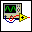
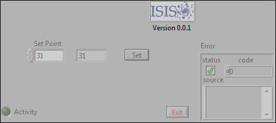
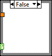
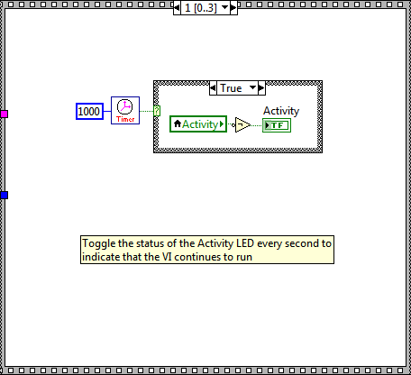
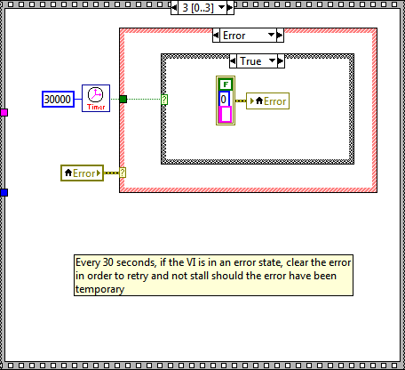
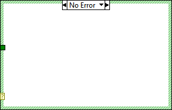
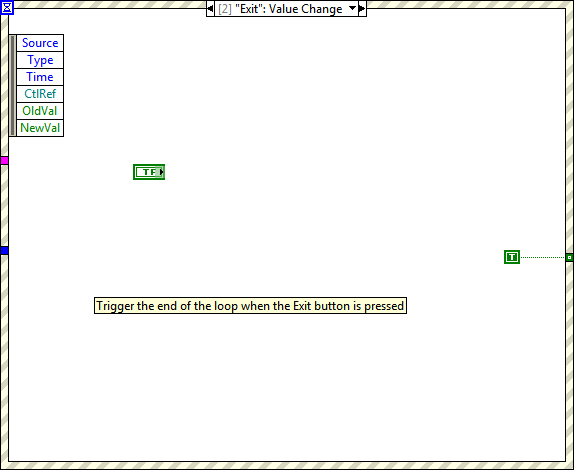
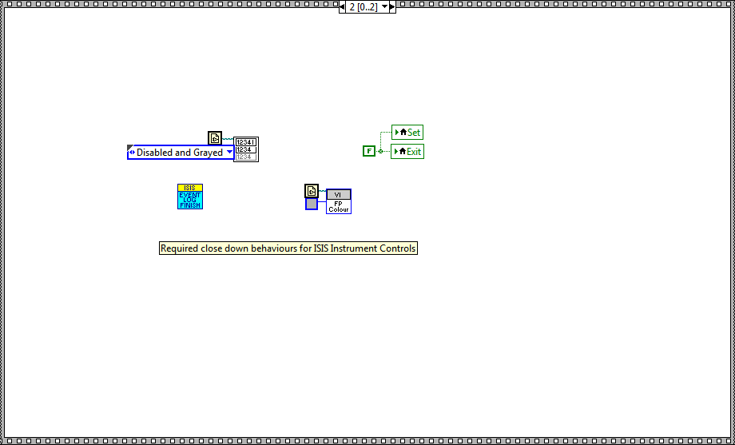

This Arbitrary Waveform Generator front panel is aimed primarily at the use of two reflectometer instruments at the ISIS Pulsed Neutron Facility at the Rutherford Appleton Laboratory. As such some variable items have been defaulted, and the code follows the standards of the Instrument Controls programming team.












